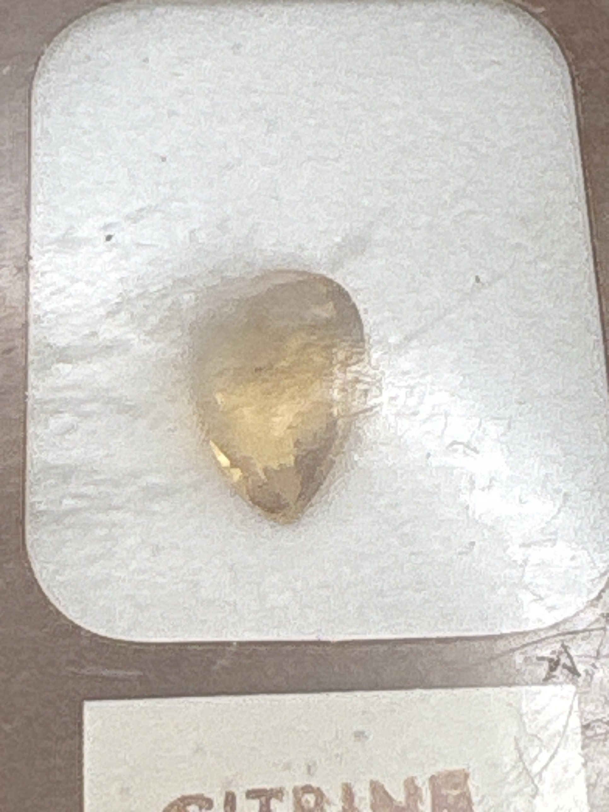

The Gem Drawer › No. 125

A golden-yellow pear cut mounted in its own certificate display window.
| Catalogue no. | #125 |
|---|---|
| As labeled | Citrine (as labeled) - single stone, matches certificate exactly, no mismatch - see notes |
| Shape / cut | Pear / teardrop |
| Weight | 0.96 (per certificate) |
| Measurements | Not recorded |
| Colour | Light golden-yellow / brownish-yellow, translucent |
| Clarity / condition | Not recorded |
Interested in this stone, or in the collection as a whole? Terry VanWormer can answer questions about it.
Click here to inquireor email Terry directly at maxrebo34@gmail.com